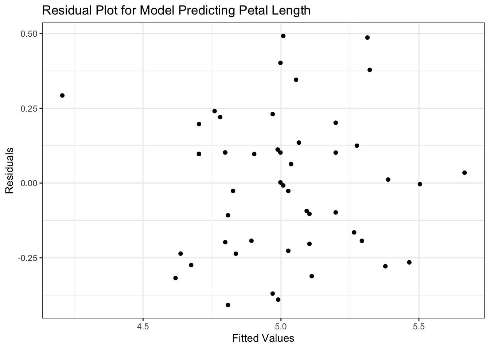
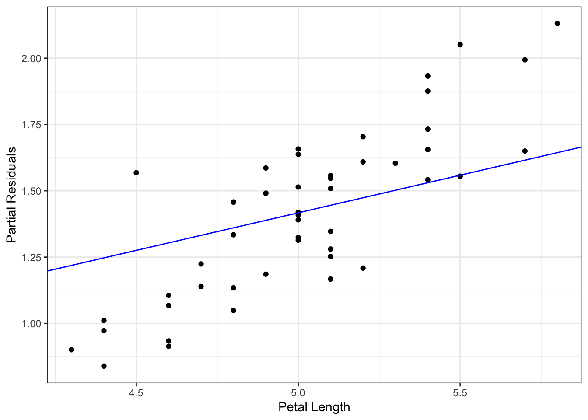
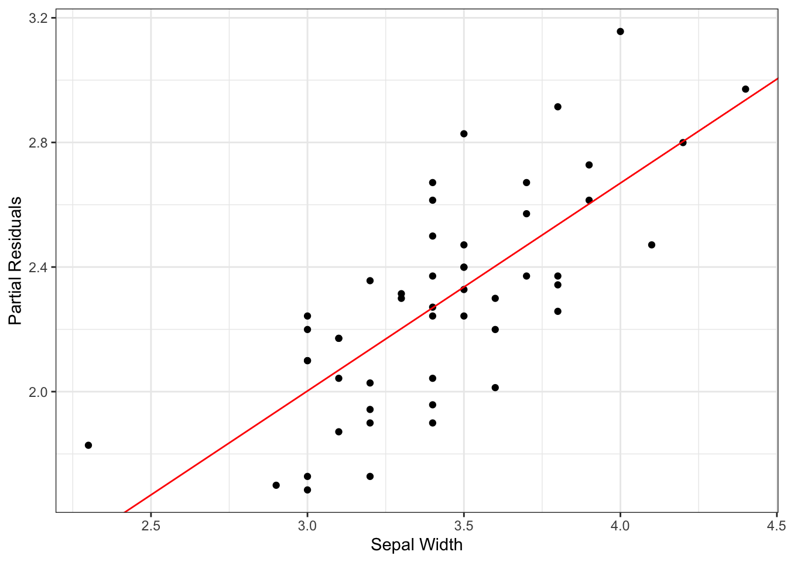

library(tidyverse)
library(knitr)
library(broom)
data("iris")
#saves the data object as d, removes all observations that are not in the
# setosa species for model simplicity, removes unncesssary variables
d <- iris |>
filter(Species == "setosa") |>
select(-c("Species", "Petal.Width"))Partial Residuals
Introduction
Hello GLM cohort. Owen and I found a whiteboard after class and tried to hash out the partial residual concept and I think we made some progress. This vignette should explain how the partial residuals are calculated, what they mean, and what their plots should look like.
Data Wrangling and Model Fitting
First we will calculate the values of the main model residuals, \(r\) which contains each \(r_i\).
#fits a linear model to find the association between sepal length
# and the predictors: petal length and sepal width
linear.model <- lm(data = d,
Sepal.Length ~ Petal.Length + Sepal.Width)
tidy(summary(linear.model)) |>
kable(digits = 3)| term | estimate | std.error | statistic | p.value |
|---|---|---|---|---|
| (Intercept) | 2.304 | 0.385 | 5.979 | 0.000 |
| Petal.Length | 0.283 | 0.197 | 1.437 | 0.157 |
| Sepal.Width | 0.667 | 0.090 | 7.387 | 0.000 |
Here we can see that petal length, which we will call \(x_1\), is not significantly associated with sepal length. Sepal width however, which we will call \(x_2\), is significantly associated with sepal length. Note that the p-values showing as \(0.000\) are not truly \(0\), they are just rounded to the third decimal place.
Standard Residual Plot
Here is a standard residual plot from this linear regression:
I included this to show how the \(r_i\)’s fit into our analysis framework and what their overall shape is, to compare with the partial residuals later on.
#creates a dataframe for the residual plot
residual_plot <- data.frame(fitted_vals = linear.model$fitted.values,
residuals = linear.model$residuals)
#creates a residual plot
residual_plot |>
ggplot(aes(x = fitted_vals, y = residuals)) +
geom_point() +
theme_bw() +
labs(x = "Fitted Values", y = "Residuals",
title = "Residual Plot for Model Predicting Petal Length")
We still see no obvious pattern in this residual plot, indicating that our model is roughly appropriate.
Partial Residual Calculation
To calculate partial residuals, we need to make a vector of those full model residuals that we have plotted above, find the values of the individual \(\hat{\beta}\)’s, and the values of those covariates.
# creates a data frame that contains the two vector elements described above
partial_res_data <- data.frame(r = linear.model$residuals,
x1_petal_length = d$Sepal.Length,
x2_sepal_width = d$Sepal.Width)
head(partial_res_data) |>
kable(digits = 3)| r | x1_petal_length | x2_sepal_width |
|---|---|---|
| 0.064 | 5.1 | 3.5 |
| 0.197 | 4.9 | 3.0 |
| -0.108 | 4.7 | 3.2 |
| -0.198 | 4.6 | 3.1 |
| -0.103 | 5.0 | 3.6 |
| 0.012 | 5.4 | 3.9 |
# save the beta values for calculation
beta1_petal_length <- linear.model$coefficients[2]
beta2_sepal_width <- linear.model$coefficients[3]Now we can go about calculating our partial residuals according to the formula:
\[ r_{ip} = r_i + \hat{\beta_p} * x_{ip} \]
partial_res_data_calc <- partial_res_data |>
mutate(r_petal_length = r + beta1_petal_length * x1_petal_length,
r_sepal_width = r + beta2_sepal_width * x2_sepal_width)
head(partial_res_data_calc) |>
kable(digits = 3)| r | x1_petal_length | x2_sepal_width | r_petal_length | r_sepal_width |
|---|---|---|---|---|
| 0.064 | 5.1 | 3.5 | 1.509 | 2.399 |
| 0.197 | 4.9 | 3.0 | 1.586 | 2.199 |
| -0.108 | 4.7 | 3.2 | 1.224 | 2.028 |
| -0.198 | 4.6 | 3.1 | 1.106 | 1.871 |
| -0.103 | 5.0 | 3.6 | 1.314 | 2.299 |
| 0.012 | 5.4 | 3.9 | 1.542 | 2.614 |
Partial Residual Plots
Now to create the partial residual plots, we plot the partial residual values that we just calculated, against the covariate values, overlayed with a line whose slope is the estimated predictor for that covariate.
partial_res_data_calc |>
ggplot(aes(x = x1_petal_length, y = r_petal_length)) +
geom_point() +
geom_abline(slope = beta1_petal_length, color = "blue") +
theme_bw() +
labs(x = "Petal Length", y = "Partial Residuals")
The partial residual plot for x1, the variable that was not significant in our model, shows that the partial residuals of that variable do not very closely follow the blue line, which represents the value of the estimated parameter for \(\hat{\beta_1}\) in our model. This is what we expect, as a predictor that is not very relevant to the model should show a weak relationship in the partial residual plot. The fact that the points seem to follow a different line of best fit, seems to indicate that a different variable is responsible for the variation in this model.
partial_res_data_calc |>
ggplot(aes(x = x2_sepal_width, y = r_sepal_width)) +
geom_point() +
geom_abline(slope = beta2_sepal_width, color = "red") +
theme_bw() +
labs(x = "Sepal Width", y = "Partial Residuals")
Here in the residual plot for x2, the variable that was significant in our model, shows a much better relationship between the partial residuals and the estimated parameter value. The slope of the red line is the estimate for \(\hat{\beta_2}\).
Summary
As stated in the notes, partial residuals allow us to simultaneously assess three key aspects of our model:
First, the importance of the predictor is shown by the amount of spread about the line. Here, we saw that our \(x_1\) predictor was not significant in the model, and did not track well with the parameter estimate slope while \(x_2\), the significant predictor, showed a much stronger relationship with its paramter estimate slope.
Second, we can assess linearity by the shape of point cloud. Both of these point clouds showed linear relationships between the partial residuals and the x-values, indicating that the linearity assumption was met.
Third, we can assess the constant variance condition, since we see relatively consistent spread of points across the length of the parameter esimate slope lines, we can say here that the constant variance assumption was met.